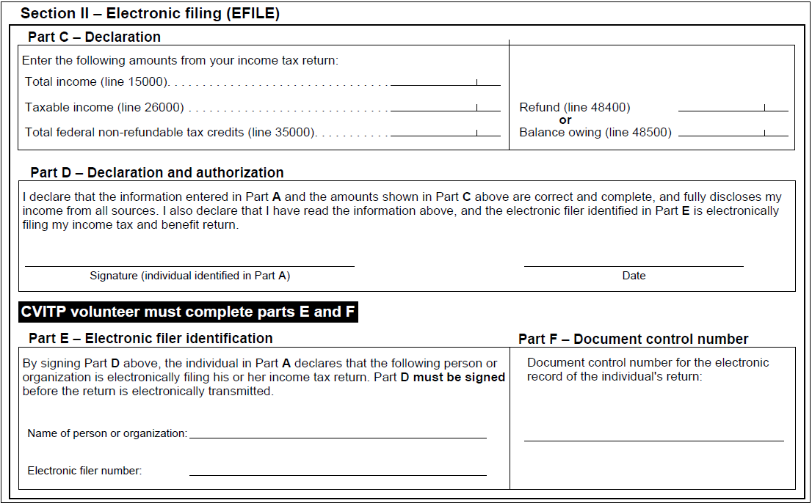

Getting authorization to electronically submit the tax return
On this page
- Getting authorization to electronically submit the tax return in person
- Getting authorization to electronically submit the tax return virtually
- Submitting the tax return
Getting authorization to electronically submit the tax return in person
Section II of form TIS60 is only applicable if the return will be electronically filed (EFILED). It must be completed and signed by both you and the individual.
UFile CVITP will automatically generate form TIS60. You can also find this form under Tools and references in the Useful forms, job aids and fact sheets section.
If you do not have the ability to print forms, you can get hard copies of the TIS60 by contacting your CRA coordinator or by calling the dedicated help line for volunteers.
TIS60, Community Volunteer Income Tax Program – Taxpayer Authorization
Section II

Text version
TIS60, Community Volunteer Income Tax Program – Taxpayer Authorization form
Protected B
Section II – Electronic filing (EFILE)
Part C – Declaration section is blank
Part D – Declaration and authorization section is blank
Part E – Electronic filer identification section is blank
Part F – Document control number section is blank
- Part C – Declaration, you must enter the total and taxable income amounts, total federal non-refundable tax credits, and if applicable, the refund or balance owing from the completed tax return
- Part D – Declaration and authorization, by signing, the individual acknowledges that they reviewed the information from Part A (Identification), and Part C (Declaration) and that the information provided is correct. The individual’s signature also authorizes you to electronically file the tax return. Part D can also be signed by the individual’s legal representative, provided they have authorization to do so
- Part E – Electronic filer identification, this is where you enter your name and EFILE number
- Part F – Document control number, this is generated upon EFILE transmission. You must enter it here
Important note
The Document control number (DCN) is assigned to the tax return at the time of transmission. It is important to remember that a DCN does not mean that the return has been successfully transmitted to the CRA.
Getting authorization to electronically submit the tax return virtually
Signing section II of the TIS60 in a virtual clinic
To complete the signing of section II of the TIS60, select one of the following options:
Send password protected email
Option 1: Send the TIS60 with Part C completed to the individual in a password protected email
- Send a generic email to the individual to ensure they understand that email is not a secure method of communication, and also to ensure you have the correct email address.
- To protect your privacy, use a separate email account and block your number from being displayed when communicating with taxpayers.
Sample of generic email
Hello,
I would like to communicate with you via email which is an unsecure method of communication. All efforts will be made to ensure that your personal information is protected throughout our correspondences. We would like to confirm that we will not be saving any personal information and all emails will be deleted upon filing your tax return. Please reply to this email to continue using email to correspond with me, a CVITP volunteer, in order to complete your tax return(s).
Thank you,
(insert name of CVITP volunteer)
- Once the individual replies providing consent the email address used is correct, send the password protected PDF of the TIS60 as an attachment by email.
- Provide the password to the individual over the phone, via text message or in a separate email. Do not include the password in the same email as the document(s).
- Once the individual has accessed the TIS60 form PDF, advise them to: electronically sign Part D of the form and email it back to you.
- If they are unable to sign electronically they can also print the form, sign it, and then either show you the signed form while video conferencing or email it back to you after scanning or taking a picture of the signed form.
- Email should only be used for obtaining consent to electronically file the TIS60 form. Avoid using email or social media channels to prepare an individual’s tax return. For more information on PDFs of UFile CVITP forms and documents, refer to How to review and submit the tax return in the UFile overview section
Provide a printed copy
Option 2: Provide a copy of the TIS60 with Part C completed to the organization
- The organization can arrange to have the individual sign Part D and can then notify you when the form has been completed.
- The individual would retain the signed copy for their records.
Obtain verbal consent
Option 3: Obtain verbal consent from the individual
- Only if option 1 or 2 are not possible, could you instead obtain verbal authorization from the individual, by reading the following script:
Before I file your tax return, please confirm the amounts I am about to share with you are correct and complete, and that you have fully disclosed your income from all sources. Also, please confirm that you authorize me to file your tax return electronically
Based on the information you provided:
- your total income is $XXXX,
- your taxable income is $XXXX,
- your total non-refundable tax credits are $XXXX, and
- you have a balance owing/refund of $XXXX.
Do you authorize me to EFILE your return with the amounts I just read to you?
Once the individual signs the TIS60 or you have obtained their verbal consent, EFILE the return. If the return cannot be transmitted, print a paper copy of the return for the individual and ask them to mail it to the CRA for processing. Refer to Contacts and links to ensure that you provide them with the correct mailing address for their applicable Tax Centre.
Nice to know
- Always give the completed TIS60 to the individual for their records
- Do not tell the individual to send it to the CRA
- Never keep a copy of the TIS60 or send it to a CRA coordinator
Submitting the return
Each person's return must be transmitted individually, immediately upon completion. For step-by-step instructions on how to transmit the return using UFile CVITP, refer to Finalizing and sending the return under the CVITP tax software overview.
There may be circumstances when it may not be possible to transmit a return immediately upon completion such as in clinic locations where internet isn’t available.
In instances where you are unable to transmit a return immediately, ensure that you:
- Always encrypt returns using the tax software and save the files on a USB flash drive only
- Never save a copy of the individual's return on the hard drive of your computer
- delete the saved return no more than 48 hours after the transmission has been accepted by the CRA